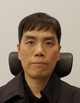

• Home
• Activities
• Projects
• Publications
• Research
Hasups' Homepage

Hasup LEE, Ph.D.
• 2024.04.01 ~ Now
Assistant Professor
Engineering Education Research Center, Konkuk University, Korea
Career
• 2014.07.16 ~ 2024.03.31
Researcher
VR Lab, Dept. of Software, Konkuk University, Korea
• 2023.03.01 ~ 2024.03.31
Lecture Inviting Professor
Immersive Media Innovation Sharing University, Konkuk University, Korea
• 2019.09.01 ~ 2022.08.31
Lecturer
College of Liberal Arts, Konkuk University, Korea
• 2012.04.01 ~ 2013.03.31
Senior Assistant Professor
Visual Simulation Lab, Grad. School of SDM, Keio University, Japan
• 2009.01.01 ~ 2012.03.31
Assistant Professor
Visual Simulation Lab, Grad. School of SDM, Keio University, Japan
• 1997.04.30 ~ 2004.01.31
Technical Research Personnel (as Military Service)
Dept. of CS, KAIST, Korea
Education
• 1997.03.01 ~ 2007.08.17
Ph.D. - AI and Media Lab, Dept. of CS, KAIST, Korea
• 1995.03.01 ~ 1997.02.28
M.S. - AI and Media Lab, Dept. of CS, KAIST, Korea
• 1990.03 ~ 1995.02
B.S. - Dept. of CS, KAIST, Korea
Contact
Address: 1019, New Engineering Bldg., Konkuk University
120, Neungdong-ro, Gwangjin-gu, Seoul, 05029, Korea
Email: hasupsⓐgmail.com